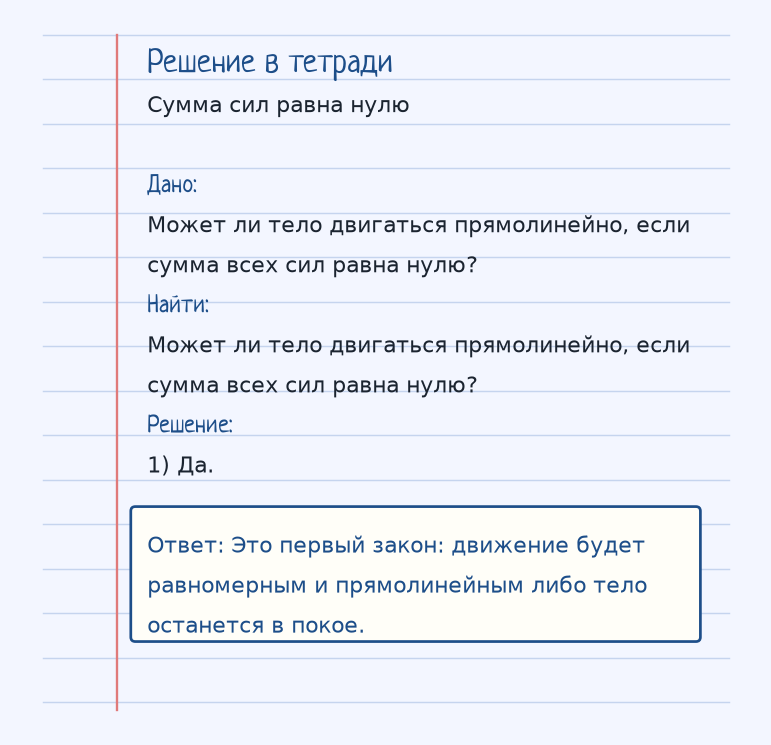
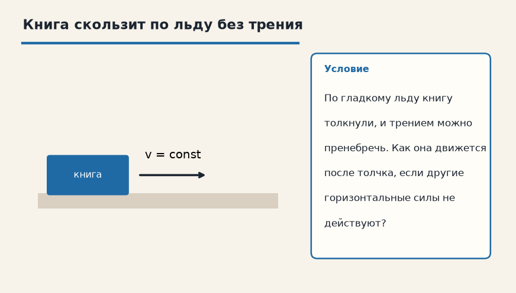

Держи картинку, не строчку. Если можешь показать рукой, куда едет тело и что его толкает, формула уже почти твоя. Ниже — как устроена тема «Первый закон Ньютона (ИСО)», где обычно спотыкаются, и два разбора до ответа.
Показ к теме. Это условие, не шпаргалка.
Сначала смысл
Существуют такие системы отсчета (инерциальные), относительно которых тело, на которое не действуют силы (или их действие скомпенсировано), движется равномерно прямолинейно или покоится.
Первый закон выделяет особые системы отсчёта — инерциальные. В них тело, на которое силы не действуют или их сумма равна нулю, не разгоняется и не тормозит: оно либо покоится, либо идёт прямо с постоянной скоростью.
Слово «инертность» как раз про это упрямство: скорость сама не меняется. Чтобы появилось ускорение, нужна ненулевая равнодействующая. Нулевая сумма сил ускорения не создаёт.
В автобусе это чувствуется телом: водитель тормозит, ноги уже стоят на замедлившемся полу, а туловище ещё сохраняет прежнюю скорость и наклоняется вперёд. С точки зрения земли ты двигался и продолжаешь двигаться, пока тебя не остановит сила.
Как решать. Выпиши величины с рисунка к примеру «Сумма сил равна нулю». Условие: Может ли тело двигаться прямолинейно, если сумма всех сил равна нулю? Дальше подставляй их в формулу этой темы и сверяй шаги с решением под картинкой — оно закрыто, пока не попробуешь сам. Второй рисунок, «Книга скользит по льду без трения», тот же приём на других данных: По гладкому льду книгу толкнули, и трением можно пренебречь. Как она движется после толчка, если другие горизонтальные силы не действуют? Если оба примера сходятся, тему можно нести на контрольную.
Как читать формулу
В инерциальной системе при компенсации сил a = 0: покой или равномерное прямолинейное движение.
Чтобы осталось в голове
Когда автобус резко тормозит, ты падаешь вперед — тело сохраняет скорость.
Когда автобус резко тормозит, тебя бросает вперёд: тело сохраняет скорость, хотя салон уже замедлился.
Где обычно спотыкаются
«Сумма сил равна нулю» не значит «тело обязано стоять». Оно может ехать прямо и равномерно. Это и есть первый закон.
Дальше две задачи. Сначала схема. Когда сам набросаешь ход, открой тетрадь — там дано, перевод в СИ, шаги и ответ в рамке.
Разбор 1
Сумма сил равна нулю
Может ли тело двигаться прямолинейно, если сумма всех сил равна нулю?
На схеме только условие. Ответа там нет — его ещё надо получить.
Смотри на порядок, не на красивое число: сначала единицы, потом формула, потом ответ.
Дано. Может ли тело двигаться прямолинейно, если сумма всех сил равна нулю?
В СИ.
Найти. Может ли тело двигаться прямолинейно, если сумма всех сил равна нулю?
Решение.
Да.
Это первый закон: движение будет равномерным и прямолинейным либо тело останется в покое.

Разбор 2
Книга скользит по льду без трения
По гладкому льду книгу толкнули, и трением можно пренебречь. Как она движется после толчка, если другие горизонтальные силы не действуют?

На схеме только условие. Ответа там нет — его ещё надо получить.
Смотри на порядок, не на красивое число: сначала единицы, потом формула, потом ответ.
Дано. По гладкому льду книгу толкнули, и трением можно пренебречь
В СИ.
Найти. Как она движется после толчка, если другие горизонтальные силы не действуют?
Решение.
Горизонтальная равнодействующая равна нулю, значит скорость после толчка сохраняется: книга едет прямо и равномерно, пока модель без трения верна.
Горизонтальная равнодействующая равна нулю, значит скорость после толчка сохраняется: книга едет прямо и равномерно, пока модель без трения верна.